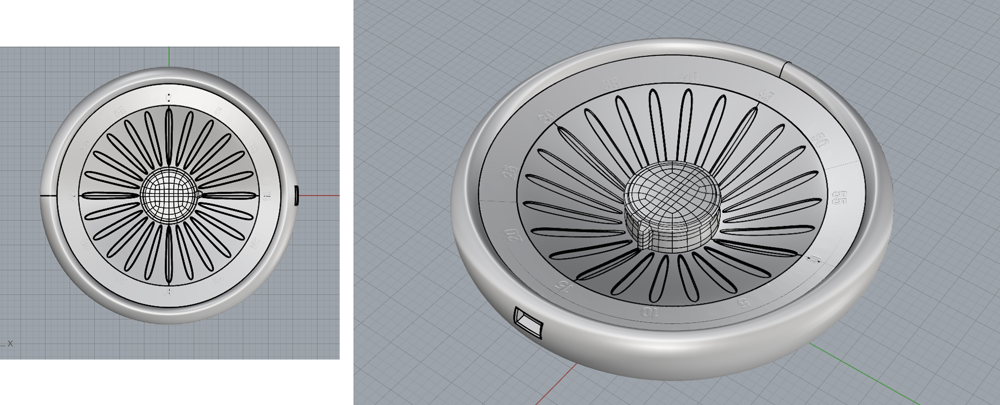
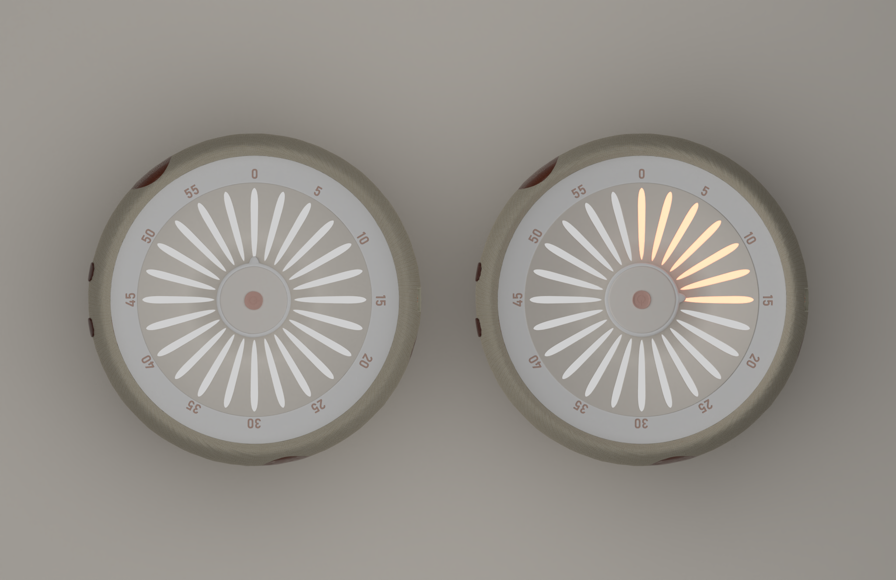
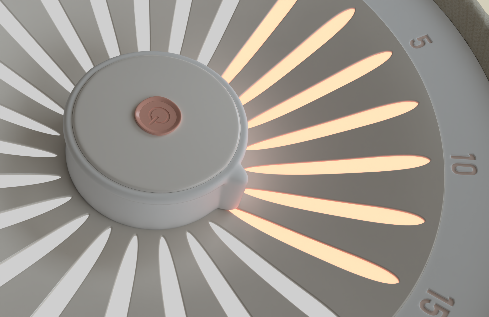
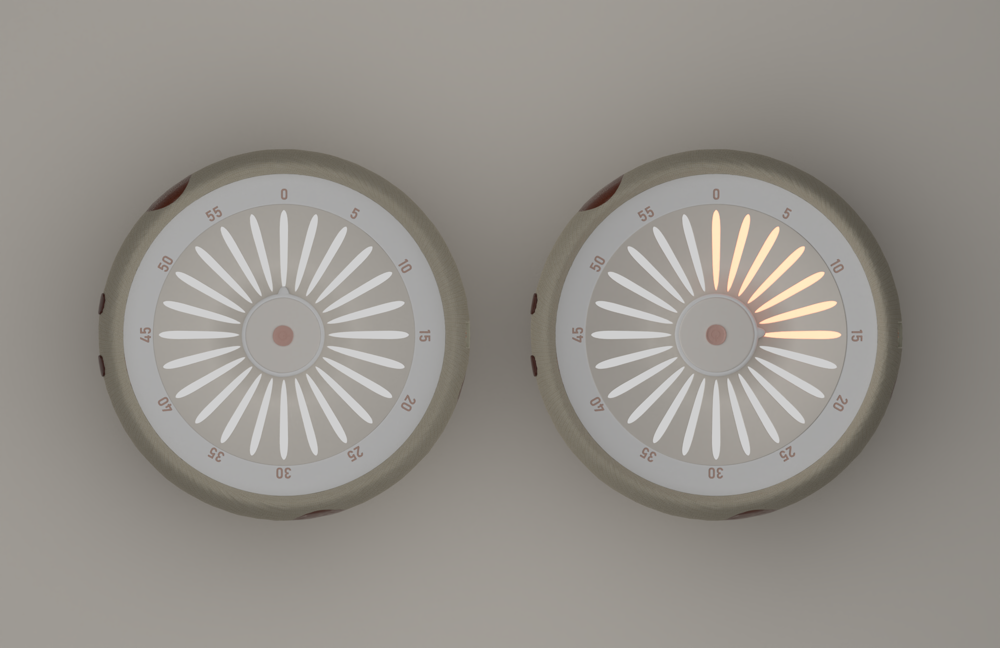
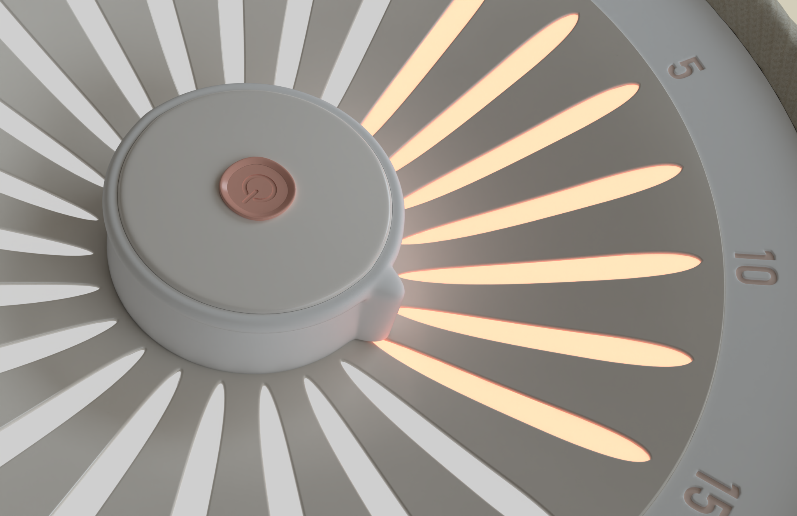

Timer Speaker
Fall 2025
This Timer-Speaker combines a speaker and a physical timer to simplify nighttime listening for audiobooks, podcasts, and white noise. Using Bluetooth audio and a dial-based interface, it removes the need for app-based timers and screens before bed. Designed as a bedside object, it features a soft knitted wool covering for warmth and comfort. The product was modeled and rendered in Rhino.

Modeling process
 


